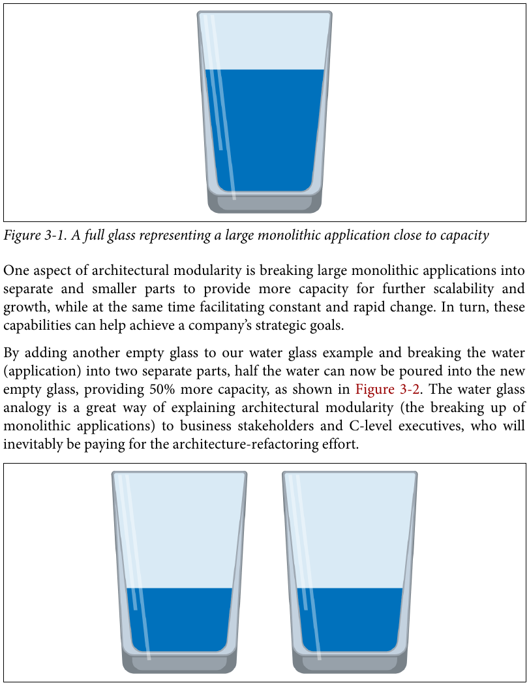
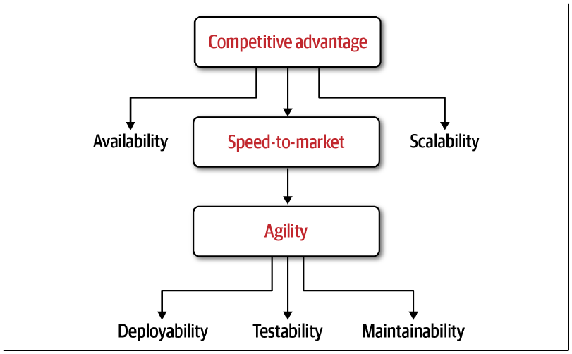
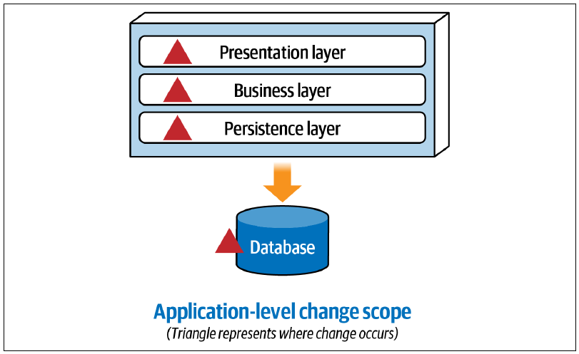
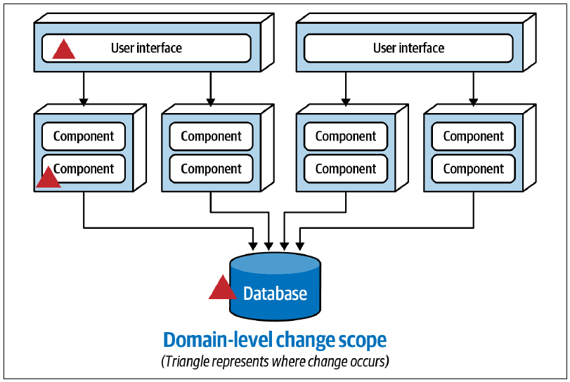
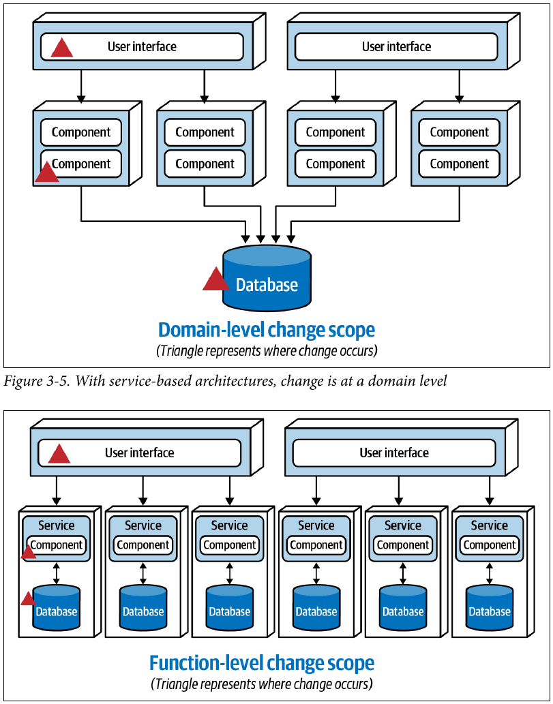
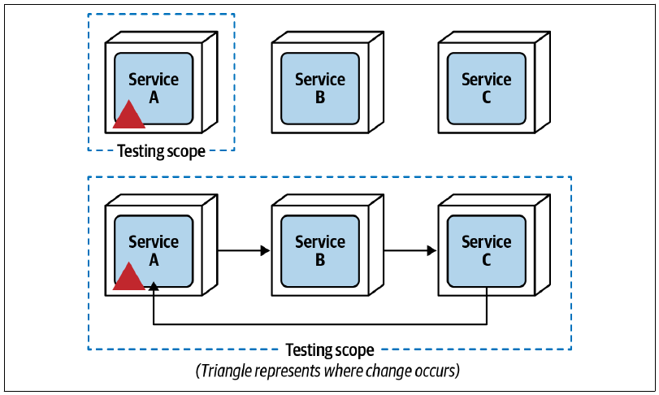
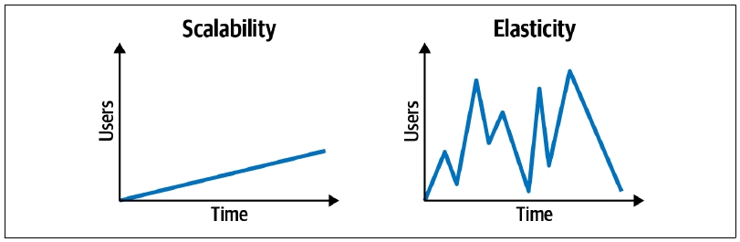
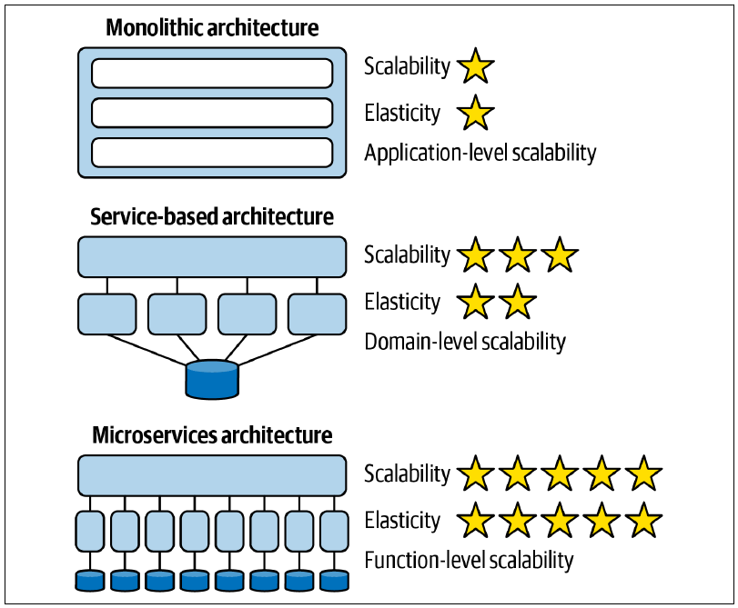

3 架构模块化
9 月 21 日，星期二，09:33
还是那间他们已经来过上百次的会议室，但今天的气氛不同，非常不同。人们陆续到场，却没有任何寒暄，只有一片死寂，仿佛用刀就能切开。没错，考虑到这次会议的主题，这个陈词滥调确实很贴切。
已经陷入困境的 Sysops Squad 工单应用，其业务负责人和发起人与应用架构师 Addison、Austen 会面，表达他们对 IT 部门始终无法解决故障工单应用无休止问题的担忧和不满。他们说：“没有一个能够正常工作的应用，我们绝不可能继续支持这条业务线。”
紧张的会议结束后，业务发起人一个接一个安静地离开，只留下 Addison 和 Austen 两人在会议室里。
“这次会议糟透了。”Addison 说，“真不敢相信，他们竟然把故障工单应用目前的所有问题都归咎于我们。情况真的很不妙。”
“是啊，我知道。”Austen 说，“尤其是可能关闭产品支持业务线的那部分。我们会被调到其他项目，更糟的是，甚至可能被裁掉。虽然我宁可把所有时间都花在足球场上，或者冬天去雪道滑雪，但我实在承受不起失去这份工作。”
“我也承受不起。”Addison 说，“况且我真的很喜欢现在的开发团队，不愿看到它被拆散。”
“我也是。”Austen 说，“我仍然认为，拆分应用可以解决其中大多数问题。”
“我同意，”Addison 说，“可我们怎样说服业务部门投入更多资金和时间来重构架构？你也看到他们在会上抱怨了：我们已经花了那么多钱到处打补丁，结果只是在这个过程中制造更多问题。”
“你说得对。”Austen 说，“到了这个时候，他们绝不会同意一项昂贵又耗时的架构迁移。”
“可既然我们都同意，为了让应用继续活下去就必须把它拆开，到底要怎样说服业务部门，获得彻底重构 Sysops Squad 应用所需的资金和时间？”Addison 问。
“我也不知道。”Austen 说，“看看 Logan 有没有空，一起讨论这个问题吧。”
Addison 在线查看，发现 Penultimate Electronics 的首席架构师 Logan 有空。他发去消息，解释两人想拆分现有单体应用，却不知道怎样说服业务部门相信这个办法有效。他还说明两人确实陷入了困境，很需要一些建议。Logan 同意见面，来到会议室。
“你们凭什么如此确定，拆分 Sysops Squad 应用就能解决所有问题？”Logan 问。
“因为，”Austen 说，“我们一遍又一遍地修补代码，看来都不起作用。问题还是多得不得了。”
“你完全没听懂我的问题。”Logan 说，“换一种方式问：除了花掉更多钱、浪费更多宝贵时间，你们有什么把握能证明拆分系统还会取得其他成果？”
“嗯，”Austen 说，“其实没有。”
“那你们怎么知道拆分应用是正确的方法？”Logan 问。
“我们已经说过了，”Austen 说，“因为试过的其他办法似乎全都无效！”
“抱歉，”Logan 说，“但你和我一样清楚，这对业务部门而言不是合理的理由。凭这种理由，你们永远拿不到所需资金。”
“那么，怎样才算充分的业务理由？”Addison 问，“我们该如何向业务部门推销这个方案，并让额外资金得到批准？”
“嗯，”Logan 说，“要为这种规模的工作建立充分商业论证，首先必须理解架构模块化的好处，然后把这些好处与当前系统面对的问题对应起来，最后分析并记录拆分应用所涉及的权衡。”
当今企业面临变化的洪流，市场演变似乎始终以惊人速度加快。业务驱动因素——例如并购——以及市场竞争加剧、消费者需求增长和创新加速——例如利用机器学习和人工智能实现自动化——必然要求底层计算机系统发生变化。很多时候，计算机系统的这些变化又要求支撑它们的底层架构随之改变。
而且，不只是业务在持续快速变化，计算机系统所处的技术环境同样如此。容器化、迁移到云基础设施、采用 DevOps，乃至持续交付流水线的新进展，都会影响计算机系统的底层架构。
在今天的世界里，从软件架构角度管理所有这些持续而迅速的变化并不容易。软件架构是系统的基础结构，因此通常被认为应当保持稳定，不能频繁改变，类似于大型建筑或摩天大楼的底层承重结构。然而，与建筑的结构架构不同，软件架构必须不断变化和适应，才能满足当今商业与技术环境的新需求。
想想今天市场上不断增加的并购。当一家公司收购另一家公司时，它不只获得对方的人员、建筑、库存等实体资产，也会获得更多客户。任一公司的现有系统能否扩展，以承受并购后增长的用户量？可伸缩性是并购中的重要问题，敏捷性和可扩展性同样如此；它们都是架构关注点。
大型单体系统——单一部署的系统——通常无法提供大多数并购所需水平的可伸缩性、敏捷性和可扩展性。额外机器资源的容量，包括线程、内存和 CPU，会很快耗尽。图 图 3.1 所示的水杯可以说明这一点。杯子代表服务器或虚拟机，水代表应用。随着单体应用不断增长，以应对并购或公司发展带来的消费者需求和用户负载，它会消耗越来越多的资源。杯中不断加水——代表单体应用不断扩大——杯子就逐渐装满。再增加一个杯子，也就是另一台服务器或虚拟机，并不能解决问题，因为新杯子最终会装入与第一个杯子等量的水。

架构模块化的一项作用，是把大型单体应用拆成彼此独立、更小的部分，为后续伸缩与增长提供更多容量，同时促进持续而迅速的变化。这些能力反过来可以帮助公司实现战略目标。
在水杯例子中再放一个空杯子，把水——应用——拆成两个独立部分，就能把一半水倒入新的空杯，从而增加 50% 的可用容量，如图 图 3.2 所示。水杯类比非常适合用来向业务利益相关者和高管解释架构模块化，也就是单体应用的拆分；毕竟，最终为架构重构买单的正是他们。

提高可伸缩性只是架构模块化的一项好处，另一项重要好处是敏捷性，即快速响应变化的能力。David Benjamin 和 David Komlos 在 2020 年 1 月发表于《福布斯》的一篇文章中写道：
有一件事会把所有参与者分成赢家和输家：能否按需作出大胆、果断的路线修正，并以有效且紧迫的方式执行。
企业要在今天的世界中生存，就必须保持敏捷。然而，即使业务利益相关者能够迅速决策、快速改变方向，公司的技术人员也未必能以足够快的速度实施新指令，从而真正产生影响。要让技术与业务以同样速度前进——反过来说，就是防止技术拖慢业务——必须具备一定程度的架构敏捷性。
3.1 模块化驱动因素
没有明确的业务驱动因素，架构师就不应把系统拆成更小的部分。拆分应用的主要业务驱动因素包括加快上市速度，有时也称产品上市时间，以及在市场中取得一定程度的竞争优势。
上市速度通过架构敏捷性实现，也就是快速响应变化的能力。敏捷性是一项复合架构特征，由其他多项架构特征组成，其中包括可维护性、可测试性和可部署性。
竞争优势则来自上市速度与可伸缩性、整体应用可用性和容错能力的结合。公司经营得越成功，增长就越快，因此需要更强的可伸缩性来支持增加的用户活动。容错能力是应用在局部发生故障时继续运行的能力；它确保应用某些部分失效时，其他部分仍能正常工作，把对最终用户的总体影响降至最低。图 图 3.3 展示了技术驱动因素与最终业务模块化驱动因素之间的关系；业务驱动因素位于方框内。

企业必须保持敏捷，才能在当今快节奏、不断变化且充满波动的市场中生存，这意味着底层架构也必须敏捷。如图 图 3.3 所示，为敏捷性、上市速度以及最终的市场竞争优势提供支持的五项关键架构特征是：可用性（容错能力）、可伸缩性、可部署性、可测试性和可维护性。
需要注意，架构模块化并不一定意味着分布式架构。模块化单体乃至微内核等单体架构，同样可以实现可维护性、可测试性和可部署性；这些概念会在后续小节定义。附录 B 列出了进一步介绍这些架构风格的参考资料。
这两种架构风格都通过组件的组织方式提供一定程度的模块化。例如，在模块化单体中，组件被组织为结构良好的领域，从而形成所谓的领域分区架构，可参见《软件架构基础》第 8 章第 103 页。微内核架构则把功能划分为彼此独立的插件组件，从而显著缩小测试和部署的范围。
3.1.1 可维护性
可维护性关注添加、修改或删除功能是否容易，也包括实施维护补丁、升级框架、升级第三方组件等内部变更的难易程度。与多数复合架构特征一样，可维护性很难被客观定义。
软件架构师、hello2morrow 创始人 Alexander von Zitzewitz 曾撰文介绍一种新指标，用于客观定义应用的可维护性水平。虽然 von Zitzewitz 的可维护性指标十分复杂，涉及许多因素，但其初始形式如下：
\[ ML = 100 \times \sum_{i=1}^{k} c_i \]
其中，\(ML\) 是整个系统的可维护性水平，取值为 0% 至 100%；\(k\) 是系统中逻辑组件的总数；\(c_i\) 是任一组件的耦合水平，尤其关注传入耦合。这个公式基本说明：组件之间的传入耦合越高，代码库的总体可维护性就越低。
抛开复杂数学不谈，依据组件——应用的架构构建块——判断应用相对可维护性时，常用指标包括：
- 组件耦合
-
组件彼此了解的程度与方式。
- 组件内聚
-
组件内部各项操作彼此关联的程度与方式。
- 圈复杂度
-
组件内部间接层次和嵌套的总体水平。
- 组件大小
-
组件中聚合的代码语句数量。
- 技术分区与领域分区
-
组件是依据技术用途还是领域目的进行组织。参见附录 A。
在架构语境中，组件是应用中的一个架构构建块，承担某类业务功能或基础设施功能。它通常表现为包结构（Java）、命名空间（C#），或者目录结构中文件（类）的物理分组。例如，“订单历史”组件可以由位于 app.business.order.history 命名空间中的一组类文件实现。
大型单体架构的可维护性通常较低，原因包括：功能按技术划分到不同层中，组件之间紧密耦合，而且从领域角度看组件内聚较弱。
例如，设想传统单体分层架构收到一项新需求：为客户愿望清单中的商品——客户可能稍后购买的商品列表——添加过期日期。注意图 图 3.4 中，新需求的变更范围处于整个应用级别，因为变化会传播到应用的所有层。

根据团队结构的不同，在单体分层架构中实施“为愿望清单商品添加过期日期”这项简单变更，可能至少需要三个团队协作：
- 用户界面团队的一名成员，需要在屏幕上添加新的过期字段。
- 后端团队的一名成员，需要添加与过期日期有关的业务规则，并修改契约以加入新的过期字段。
- 数据库团队的一名成员，需要修改表模式，在
Wishlist表中添加新的过期列。
由于“愿望清单”领域分散在整个架构中，维护某个特定领域或子领域——例如愿望清单——就变得更加困难。模块化架构则把领域和子领域划分为更小、彼此独立部署的软件单元，使领域或子领域更容易修改。
图 图 3.5 显示，在分布式的基于服务架构中，新需求的变更范围位于某项特定领域服务内部的领域级别，因此更容易隔离需要变更的具体部署单元。

如果进一步提高架构模块化程度，采用图 图 3.6 所示的微服务架构，新需求的变更范围就会落到功能级别，把变化隔离在负责愿望清单功能的具体服务中。

这三个逐步走向模块化的阶段表明：架构模块化水平越高，可维护性也越高，添加、修改或删除功能都会更加容易。
3.1.2 可测试性
可测试性指测试的难易程度——通常通过自动化测试实现——以及测试的完整程度。可测试性是架构敏捷性不可或缺的组成部分。
分层架构等大型单体架构风格，只能提供相对较低的可测试性，因而敏捷性也较低，因为很难对大型部署单元中的所有功能进行完整、彻底的回归测试。即使单体应用拥有完整的回归测试套件，也可以想象，仅仅为一次简单代码变更就要执行数百乃至数千项单元测试会多么令人沮丧。运行全部测试不仅耗时很长，可怜的开发人员还会困在调查数十项测试为何失败的工作里，而这些失败其实与本次变更毫无关系。
架构模块化——把应用拆成更小的部署单元——会显著缩小服务变更的总体测试范围，使测试更加完整，也更容易实施。模块化不仅带来更小、更有针对性的测试套件，也使单元测试本身更容易维护。
虽然架构模块化通常能提高可测试性，但有时也会引发与单体单一部署应用相同的问题。例如，设想某个应用被拆成图 图 3.7 所示的三个更小且自包含的部署单元，也就是服务。

由于服务 B 和服务 C 都不与服务 A 耦合，对服务 A 的变更只需测试服务 A。然而，当这些服务之间的通信增加时——如图 图 3.7 下半部分所示——可测试性会迅速下降，因为服务 A 的变更如今必须把服务 B 和服务 C 都纳入测试范围，从而同时影响测试的难易程度与完整程度。
3.1.3 可部署性
可部署性不只关乎部署是否容易，还关乎部署频率和总体部署风险。要支持敏捷性并快速响应变化，应用必须同时支持这三个因素。
每两周甚至更久才部署一次软件，不仅会提高总体部署风险——因为多项变更被成组捆绑在一起——而且多数情况下会无谓地推迟已经可以交付给客户的新功能或缺陷修复。当然，部署频率必须与客户或最终用户快速吸收变化的能力保持平衡。
单体架构的可部署性通常较低，原因包括：部署应用时涉及大量仪式性工作，例如代码冻结和模拟部署；新功能或缺陷修复部署后，破坏其他部分的风险更高；两次部署之间的间隔也很长，可能达到数周或数月。
如果应用通过独立部署的软件单元实现了一定程度的架构模块化，与庞大的单一单体应用相比，部署仪式会更少，部署风险会更低，也能更加频繁地部署。
与可测试性一样，服务变得越小、为了完成一项业务事务而彼此通信得越多，可部署性受到的负面影响也越大。部署风险会增加，团队会因为害怕破坏其他服务，而更难部署一项简单变更。软件架构师 Matt Stine 在一篇有关编排微服务的文章中写道：
如果你的微服务必须作为一个完整集合、按照特定顺序进行部署，请把它们放回单体中，给自己少找些痛苦。
这种情况会形成俗称的“分布式大泥球”，架构模块化带来的好处几乎一个也实现不了。
3.1.4 可伸缩性
可伸缩性是系统在用户负载随时间逐渐增加时保持响应能力的能力。与它相关的弹性，是系统在用户负载出现非常高、瞬时且不规则的突增时保持响应能力的能力。图 图 3.8 展示了可伸缩性与弹性的区别。

这两项架构特征都把响应能力视为并发请求数——或系统用户数——的函数，但从架构和实现角度看，两者的处理方式不同。可伸缩性通常随着公司的正常增长在较长时间内发生；弹性则是对用户负载突增的即时响应。
音乐会售票系统可以很好地说明这一区别。两场大型音乐会之间，并发用户负载通常很轻。但热门音乐会开始售票的那一刻，并发用户量会显著突增；系统可能在几秒内从 20 名并发用户跃升到 3,000 名。要维持响应能力，系统必须既有容量承受用户负载高峰，又能即时启动更多服务来应对流量突增。
弹性依赖服务拥有很短的平均启动时间（mean time to startup，MTTS）。从架构上说，这要通过很小的细粒度服务来实现。有了适当的架构解决方案后，还可以在设计阶段使用小型轻量平台和运行环境等技术，进一步管理 MTTS，进而改善弹性。
虽然细粒度服务可以同时改善可伸缩性和弹性，但弹性更多是粒度——部署单元大小——的函数，可伸缩性则更多是模块化——把应用拆成多个独立部署单元——的函数。
图 图 3.9 比较了传统分层架构、基于服务的架构和微服务架构在可伸缩性与弹性方面的星级评价。这些架构风格及其评级的详细说明见《软件架构基础》。一颗星表示该架构风格不能很好地支持这项能力；五颗星表示该能力是架构风格的一项主要特征，能够得到充分支持。

单体分层架构在可伸缩性和弹性方面的评级都相对较低。大型单体分层架构既难以伸缩，成本也很高，因为应用的全部功能必须按相同程度扩展，也就是应用级伸缩，而且 MTTS 很差。在云基础设施中，这可能变得格外昂贵。
基于服务的架构中，可伸缩性得到了改善，但弹性的改善没有那么明显。这是因为其中的领域服务粒度较粗，通常把整个领域放在一个部署单元中，例如订单处理或仓库管理。由于体积较大，它们的 MTTS 通常太长，无法足够迅速地响应即时弹性需求。因此它能实现领域级伸缩，但 MTTS 只能算尚可。
微服务架构中，可伸缩性和弹性都达到最高水平，因为每项独立部署的服务都很小、用途单一而且粒度细。它能实现功能级伸缩，并拥有优秀的 MTTS。
与可测试性和可部署性一样，为完成一项业务事务而互相通信的服务越多，对可伸缩性和弹性的负面影响就越大。因此，当系统要求很高的可伸缩性和弹性时，务必把服务之间的同步通信降至最低。
3.1.5 可用性与容错能力
与许多架构特征一样，容错能力有多种定义。在架构模块化的语境中，本书把它定义为：系统某些部分发生故障时，其他部分仍能保持响应和可用的能力。
例如，零售应用的付款处理部分发生致命错误——如内存耗尽——时，即使付款处理不可用，系统用户仍应能够搜索商品并下单。
所有单体系统的容错水平都很低。虽然可以对整个应用运行多个实例并做负载均衡，以缓解单体系统的容错问题，但这种技术既昂贵又缺乏效果。如果故障源于程序缺陷，该缺陷会存在于两个实例中，因而可能让两个实例同时宕机。
架构模块化是系统实现领域级和功能级容错的必要条件。把系统拆成多个部署单元后，灾难性故障只会隔离在发生故障的部署单元中，系统其余部分仍能正常运行。
不过，这里有一个限制：如果其他服务同步依赖正在发生故障的服务，就无法实现容错。这正是异步服务通信对分布式系统保持良好容错水平至关重要的原因之一。
3.2 Sysops Squad 传奇：建立商业论证
9 月 30 日，星期四，12:01
Addison 和 Austen 已经更深入地理解架构模块化的含义，以及拆分系统的相应驱动因素。两人见面讨论 Sysops Squad 的问题，尝试把问题与模块化驱动因素对应起来，从而建立一份有说服力的商业论证，提交给业务发起人。
“逐项看看我们面对的问题，判断它们能否对应某些模块化驱动因素。”Addison 说，“这样就能向业务部门证明，拆分应用确实会解决当前问题。”
“好主意。”Austen 说，“先看他们在会上谈到的第一个问题——变更。我们似乎无法有效修改现有单体系统而不破坏其他部分。变更耗时太长，测试变更也令人头痛。”
“开发人员还一直抱怨代码库太大，很难找到应当在哪里实施新功能变更或缺陷修复。”Addison 说。
“好，”Austen 说，“那么，总体可维护性显然是这里的关键问题。”
“没错。”Addison 说，“拆分应用不仅能解耦代码，还会把功能隔离和划分到独立部署的服务中，使开发人员更容易实施变更。”
“可测试性是与这个问题有关的另一项关键特征，但我们已经用大量自动化单元测试解决了。”Austen 说。
“其实没有。”Addison 回答，“看看这个。”
Addison 向 Austen 展示：超过 30% 的测试用例已被注释掉或已经过时；系统某些关键工作流部分甚至缺少测试用例。他还解释说，开发人员一直抱怨，无论变更大小，都必须运行整个单元测试套件。这不仅耗时很长，开发人员还不得不修复与自己变更无关的问题。这正是连最简单的变更也要花很久的原因之一。
“可测试性既关乎测试是否容易，也关乎测试是否完整。”Addison 说，“我们两者都不具备。拆分应用后，可以显著缩小应用变更的测试范围，把相关自动化单元测试组织在一起，提高测试完整性，也就会减少缺陷。”
“可部署性也是同样的道理。”Addison 继续说，“因为应用是单体，即使只修复一个小缺陷，也必须部署整个系统。部署风险很高，所以 Parker 坚持每月才发布一次生产版本。Parker 没意识到，这样做会在每个版本里堆积多项变更，其中有些甚至从未一起测试过。”
“我同意，”Austen 说，“况且每次发布前的模拟部署和代码冻结会占用宝贵时间——而我们恰好没有时间。不过，我们现在讨论的不是架构问题，纯粹是部署流水线问题。”
“我不同意。”Addison 说，“这肯定也与架构有关。想一想，Austen。如果把系统拆成独立部署的服务，任一服务的变更就只限定在该服务中。例如，假设我们又一次修改工单分配流程。如果它是一项独立服务，不仅测试范围会缩小，部署风险也会显著降低。这样就能减少许多仪式性工作，更频繁地部署，同时显著减少缺陷数量。”
“我明白你的意思。”Austen 说，“我同意你的观点，但仍然认为，我们迟早也必须修改当前的部署流水线。”
两人确信，拆分 Sysops Squad 应用并迁移到分布式架构可以解决变更问题，随后开始处理业务发起人的其他担忧。
“好，”Addison 说，“业务发起人在会上抱怨的另一个大问题，是总体客户满意度。有时系统不可用；它似乎每天都会在某些时段崩溃；丢失工单和工单路由问题也太多。难怪客户开始取消支持计划。”
“等一下，”Austen 说，“我这里有最新指标。持续导致系统宕机的并不是核心工单功能，而是客户调查和报告功能。”
“这是个大好消息。”Addison 说，“把系统的这些功能拆成独立服务，就能隔离故障，让核心工单功能继续运行。仅凭这一点就已经是充分理由！”
“正是如此。”Austen 说，“那么我们一致认为：通过容错提高总体可用性，可以解决应用不能始终供客户使用的问题，因为客户只与系统的工单部分交互。”
“可系统卡死的问题呢？”Addison 问，“怎样用拆分应用来论证这一点？”
“正巧，我请 Sysops Squad 开发团队的 Sydney 针对这个问题做了分析。”Austen 说，“结果是两个因素共同造成的。第一，每当超过 25 位客户同时创建工单，系统就会卡死。但你再看这个——白天客户提交问题工单时，只要他们运行操作报告，系统同样会卡死。”
“那么，”Addison 说，“看来这里同时存在可伸缩性问题和数据库负载问题。”
“完全正确！”Austen 说，“而且，拆分应用和单体数据库后，可以把报告隔离到独立系统中，还能为面向客户的工单功能提供额外的伸缩能力。”
Addison 和 Austen 已经建立了充分的商业论证，可以提交给业务发起人；两人也确信这是拯救这条业务线的正确方法。Addison 为拆分系统的决策创建了下面这份架构决策记录，并为业务发起人准备了相应的商业论证演示。
3.2.1 背景
Sysops Squad 当前是一个单体问题工单应用，支持与问题工单有关的多项不同业务功能，包括客户注册、问题工单录入与处理、操作型与分析型报告、账单和付款处理，以及各种管理维护功能。当前应用存在大量与可伸缩性、可用性和可维护性有关的问题。
3.2.2 决策
我们将把现有单体 Sysops Squad 应用迁移到分布式架构。迁移将实现以下目标：
- 让外部客户使用的核心工单功能更加可用，从而提供更好的容错能力。
- 为客户增长和工单创建提供更好的可伸缩性，解决频繁发生的应用卡死问题。
- 分离报告功能及其数据库负载，解决频繁发生的应用卡死问题。
- 让团队比在当前单体应用中更快地实现新功能和修复缺陷，从而提高总体敏捷性。
- 减少变更时引入系统的缺陷数量，从而提高可测试性。
- 以更快速度——每周甚至每天——部署新功能和缺陷修复，从而提高可部署性。
3.2.3 后果
- 迁移工作需要大多数开发人员参与架构迁移，因此会推迟新功能的引入。
- 迁移工作会产生额外成本，成本估算尚待确定。
- 在修改现有部署流水线之前，发布工程师必须管理多个部署单元的发布和监控。
- 迁移工作要求我们拆分单体数据库。
Addison 和 Austen 与 Sysops Squad 问题工单系统的业务发起人会面，以清晰简洁的方式陈述了论证。业务发起人对演示很满意，并同意这项方案，通知两人继续推进迁移。